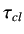

- PI Controller using Ziegler Nichols Tuning with the results of the first step test experiment:
- Kc = 19.75
 = 18
= 18
- PID Controller using Ziegler Nichols Tuning with the results of the first step test experiment:
- Kc = 26.327
- = 12
 = 3
= 3
- PI Controller Using Direct Synthesis with the results of the second step test experiment ( is taken
as
 /2):
/2):
- Kc = 4.02
- = 52.645
rokade
2017-04-23